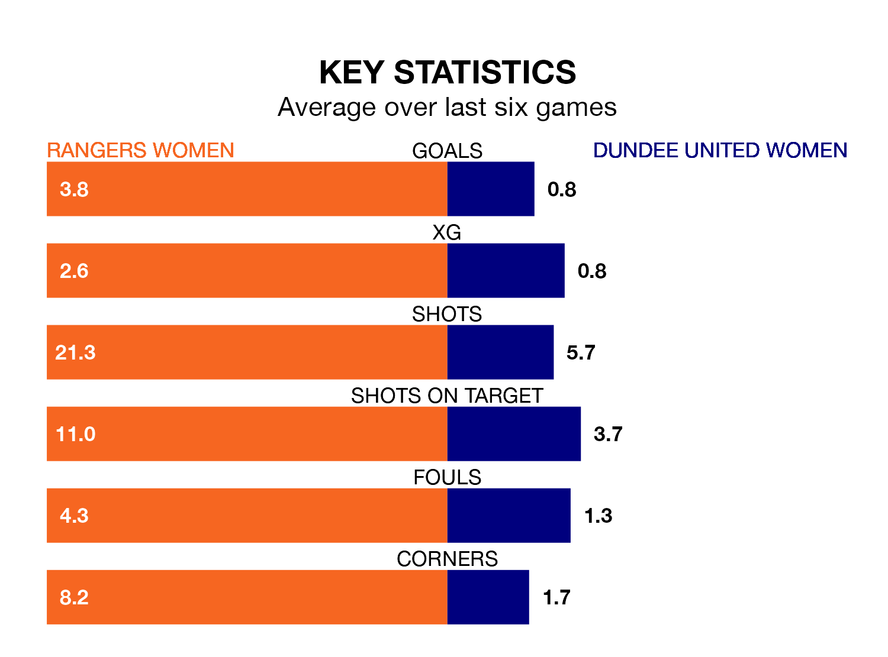

Relegation candidates Dundee United Women face a challenge away against high-flying Rangers Women at the Broadwood Stadium on Sunday.
Dundee United Women are ninth in the SWPL 1 table, and have picked up three wins and one draw in their 16 games to date.
Rangers, meanwhile, are top of the standings with 46 points, having won 15 and drawn one.
Rangers are in exceptional form in SWPL 1, with six wins and no losses from their last six games.
With a win and five losses over that period, Dundee United's form is much worse – they have taken three points from 18, compared to the home team's 18.
With 75 goals in 16 games so far this season, Rangers are the league's second-highest scorers with 4.7 goals per game. And they are conceding fewer than average, letting in eight goals at a rate of 0.5 per game.
The visitors, meanwhile, are below average scorers, with 0.9 goals per game, compared to a league average of 2.2. They have conceded 3.4 goals per game.
In Rio Hardy, Rangers have the league's sharpest shooter so far this season. She has notched 18 goals in 16 appearances.
Her goal rate of one every 75 minutes is much quicker than that of Rachel Todd, Dundee United's top scorer with a goal every 235 minutes, and a total of six goals in 16 games.
Rangers's last match was on December 17, a 4-0 win against Hamilton Academical, with Mia McAulay (two), Chelsea Cornet and Elizabeth Arnott getting the goals for Rangers.
Dundee United lost 1-0 against Motherwell Women last time out, also on December 17.
Updated: 10:50, 10/01/24